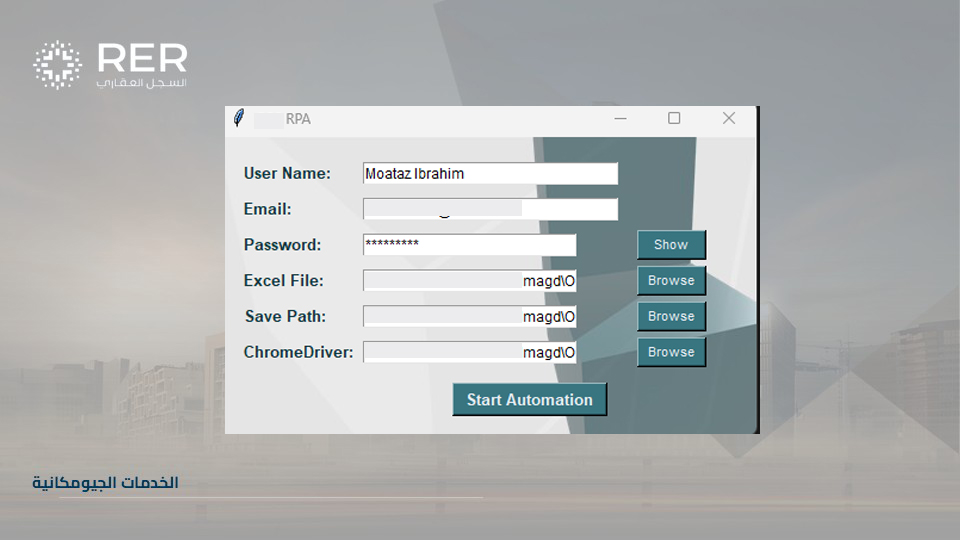

مخطط عمراني
مخطط عمراني بخبرة تزيد عن 5 سنوات في التخطيط الاستراتيجي والتفصيلي في مصر والمملكة العربية السعودية. ماهر في المسوحات، وتحليل البيانات، وتحويل البيانات المكانية إلى خطط تنموية قابلة للتنفيذ.
أؤمن بالدقة، والتعلم المستمر، والنزاهة في كل جانب من جوانب عملي. يستند نهجي إلى الالتزام بالجودة، والتعاون، والابتكار، خاصة في التخطيط العمراني ونظم المعلومات الجغرافية. أقدر العمل الهادف الذي يخلق تأثيراً حقيقياً في المجتمعات والمدن.
هدفي هو أن أصبح خبيراً رائداً في دمج نظم المعلومات الجغرافية، والتخطيط العمراني، والعمارة — من خلال الجمع بين البيانات والتصميم والتكنولوجيا لحل التحديات الحضرية المعقدة. أطمح لتعميق مهاراتي البرمجية، خاصة في بايثون وتطوير الويب، وإلى المساهمة في مشاريع ذات تأثير عالٍ في المدن الذكية والتنمية المستدامة.
خارج نطاق العمل، أستمتع باستكشاف التقنيات الجديدة، والقراءة في المواضيع الفلسفية والنفسية مثل فقه النفس وثنائية القيم، وتعزيز مهاراتي في التصميم والبرمجة. كما أحب مشاركة المعرفة المفيدة — من نصائح نظم المعلومات الجغرافية إلى حيل الإنتاجية الصغيرة — لمساعدة الآخرين على النمو معي.
مخطط عمراني، وأخصائي نظم معلومات جغرافية، ومعماري بخبرة تزيد عن 5 سنوات في أنظمة المعلومات الجغرافية، والتخطيط العمراني، والتصميم المعماري. بارع في التعامل مع المشاريع المعقدة مع تركيز قوي على الدقة، والكفاءة، والنتائج عالية الجودة. متمكن في تطبيقات نظم المعلومات الجغرافية، وتحليل البيانات، والأتمتة، ورسم الخرائط. حلّال قوي للمشكلات بتفكير ابتكاري ونهج تعاوني، مما يعزز إنتاجية الفريق ونجاح المشاريع. ملتزم بالتعلم المستمر والبقاء في طليعة التطورات الصناعية.

مخطط عمراني بخبرة تزيد عن 5 سنوات في التخطيط الاستراتيجي والتفصيلي في مصر والمملكة العربية السعودية. ماهر في المسوحات، وتحليل البيانات، وتحويل البيانات المكانية إلى خطط تنموية قابلة للتنفيذ.

أخصائي نظم معلومات جغرافية ذو خبرة في ArcGIS Pro و ModelBuilder وبايثون. قوي في أتمتة سير العمل، ودقة البيانات، وإنشاء خرائط عالية الجودة للمشاريع العمرانية والعقارية الكبرى..

معماري بخبرة في التصميم ثنائي/ثلاثي الأبعاد، وأوتوكاد، و3Ds Max، والإخراج الفني باستخدام Corona و V-Ray. عملت على مشاريع سكنية وتجارية مع التركيز على التفاصيل والوظيفة.
ماهر في مجموعة واسعة من أدوات التصميم ونظم المعلومات الجغرافية والتطوير مع تركيز قوي على الدقة، والأتمتة، والإبداع: التخطيط العمراني وتحليل نظم المعلومات الجغرافية
محترف متعدد التخصصات بخبرة تزيد عن 5 سنوات كمخطط عمراني وأخصائي نظم معلومات جغرافية و معماري. ماهر في التحليل المكاني، والتصميم المعماري ثلاثي الأبعاد، وتطوير الواجهة الأمامية. ساهم في مشاريع تطوير حضري كبرى في مصر والمملكة العربية السعودية، مع تركيز قوي على دقة البيانات، والأتمتة، والسرد البصري من خلال الخرائط والتصميم. معروف بالجمع بين الدقة التقنية و حل المشكلات الإبداعي.
بكالوريوس في التخطيط العمراني والإقليمي
مع أكثر من 5 سنوات من الخبرة المهنية، ساهمت في مجموعة من المشاريع الكبرى في التخطيط العمراني، وتحليل نظم المعلومات الجغرافية، و التصميم المعماري. تشمل خبرتي إدارة البيانات المكانية، وإنتاج الخرائط، والأتمتة باستخدام ModelBuilder و ArcPy، ودمج حلول نظم المعلومات الجغرافية في استراتيجيات التطوير العمراني. عملت على مشاريع ذات تأثير عالٍ مثل التسجيل العقاري، وإحياء المناطق الحضرية، وتخطيط البنية التحتية للمنظمات الرائدة في المملكة العربية السعودية ومصر.
استكشف معرض أعمالي المتنوع الذي يشمل تحليل نظم المعلومات الجغرافية، والتخطيط العمراني، والتصميم المعماري، وتطوير الويب. يعكس كل مشروع التزامي بالدقة والابتكار والحلول العملية للتحديات الواقعية.

منصة جيومكانية غامرة مصممة لمشروع جدة المركزية، تدمج تصورات نظم المعلومات الجغرافية الفنية عالية الدقة مع خرائط استثمارية تفاعلية ولوحات معلومات بيانات ذكية لعرض التحول العمراني للوجهة الرئيسية على البحر الأحمر.

مزيج من رموز نظم المعلومات الجغرافية المستوحاة من تولكين والرسوم الرقمية المخصصة. يتميز بعناصر مرسومة يدوياً، وأنسجة عتيقة، ومزج ألوان نابض بالحياة مطبق على البيانات المكانية العالمية.

أسلوب رسم خرائط حنيني يحول بيانات نظم المعلومات الجغرافية إلى جماليات كتاب قصص كلاسيكي باستخدام أنسجة عضوية، ورموز مرسومة يدوياً، وتقنيات مزج ألوان مائية ناعمة.

استكشاف إبداعي يدمج البيانات المكانية مع التصميم المتقدم. يتميز هذا المشروع بـ 'خريطة ممتعة' للقوقاز، باستخدام أوضاع المزج والضباب الجوي لتحويل التضاريس الوعرة إلى تجربة بصرية دراماتيكية عالية الدقة.

مجموعة منسقة من مشاركاتي في #30DayMapChallenge. تعرض هذه السلسلة تقاطع البيانات الجيومكانية والفن الرقمي.

عرض ثلاثي الأبعاد متقدم لتضاريس فلسطين باستخدام بيانات الارتفاع. يركز هذا المشروع على الإضاءة الواقعية وأنسجة التضاريس لإنشاء منظر طبيعي طبوغرافي مفصل للغاية.

تصميم داخلي حديث لمنطقة الاستقبال في مجمع زايد هايتس، يمزج الفخامة مع الوظيفة. هذا مشروع واقعي تم تنفيذه لشركة إنجاز للتطوير.

تصميم داخلي ذكي لشقة مدمجة في دبي، يركز على تحسين المساحة و الجماليات الحديثة. تضمن المشروع إنشاء وثائق بناء كاملة و رسومات تقنية تفصيلية لضمان التنفيذ السلس للعميل.

تصميم المناظر الطبيعية والتخطيط المكاني لفناء خلفي خاص في سكاكا، المملكة العربية السعودية. يركز المشروع على إنشاء ملاذ خارجي وظيفي من خلال موازنة المساحات الخضراء والجلوس المناطق، المقدمة من خلال تخطيطات AutoCAD الدقيقة وعرض معماري عالي الجودة بـ Photoshop.

موقع شخصي مستجيب بالكامل تم بناؤه من الصفر لعرض مهاراتي ومشاريعي في نظم المعلومات الجغرافية، والتخطيط العمراني، والعمارة. التركيز على التصميم النظيف وتجربة المستخدم.

تطبيق ويب غير متزامن يستفيد من واجهة برمجة تطبيقات OpenWeatherMap لجلب بيانات الطقس في الوقت الفعلي بناءً على إدخال المستخدم. تم تطويره باستخدام Node.js و Express، يقوم التطبيق ديناميكياً بتحديث واجهة المستخدم لعرض ظروف الطقس وانعكاسات المستخدم دون تحديث الصفحة.

روبوت أتمتة يتعامل مع مهام الكمبيوتر المتكررة. يقوم بتسجيل الدخول إلى أنظمة العمل، معالجة الحالات تلقائياً، التحقق من الحالات، استخراج المعلومات، الموافقة على الحالات الجاهزة، و حفظ جميع النتائج في التقارير والملفات—يقوم بعملك الممل بينما تستمتع بالقهوة!
لا تتردد في التواصل للتعاون، أو المشاريع الحرة، أو إذا كنت ترغب ببساطة في التواصل. أنا دائماً منفتح على فرص جديدة في التخطيط العمراني، ونظم المعلومات الجغرافية، والعمارة، والحلول الرقمية.
حقوق النشر © محمود أبو المجد ®


"وَأَن لَّيْسَ لِلْإِنسَانِ إِلَّا مَا سَعَىٰ"
سورة النجم، الآية 39